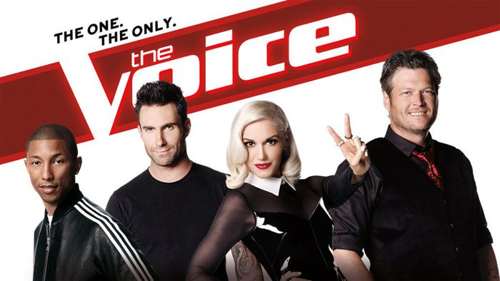

Over the course of my life, I have been watching a lot of television programs, ranging from scientific to reality shows. However, the TV program that I am addicted to is the Apprentice on NBC channel. The show airs for about 30 minutes, twice a week. The show is hosted by Donald Trump, one of the richest and most powerful billionaires in the world.\n\nThere are often 10 people in each episode and all the participants are young, dynamic, enthusiastic and talented people from all walks of life. Despite of different backgrounds, they all share the same dream of becoming successful people, which is the very reason why they join this program.\n\nThe Apprentice is regarded among one of the most popular educational TV programs. Watching this program, I can gain a deeper insight into the business world and about obstacles that people have to encounter and overcome in order to succeed.\n\nThis program is useful for not only business people but also young people like me. It inspires us and motivates us to advance in our career paths.\n \n\n\n"